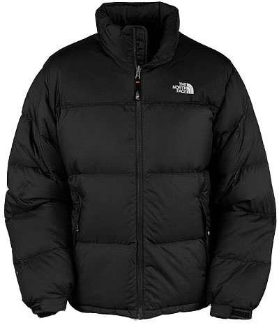
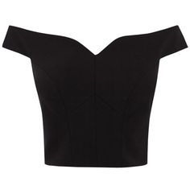
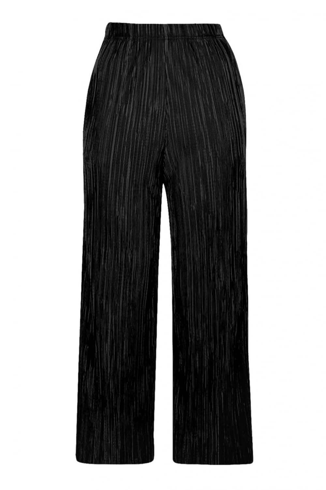
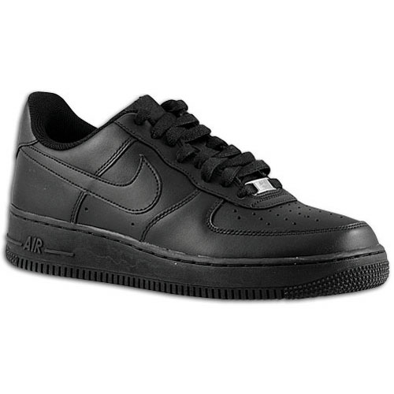
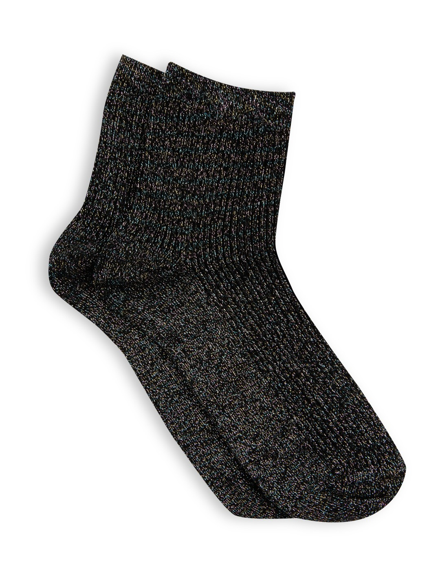

Outfit |
Description |
|---|---|
|  | This most important item for South East London is the North Face puffer jacket. Typically black and typically baggy. This item will be worn day and night. |
|  | A casual sweetheart neck line crop top in black will compliment any trousers for any occasion. It can be dressed down with a crewneck or up with some jewellery. |
|  | Next, a pair of culottes are a must have. They are comfortable and fashionable and dry easily in the rain. They are both day and night wear. |
|  | Air force 1’s and trainers in general are vital for surviving Peckham. Whether you are going to the park for a blem or going clubbing, working or meeting a friend for a coffee, comfortable footwear is recommended. |
|  | Lastly, a cute pair of glitter socks may offer some colour to this dark sleek look. |